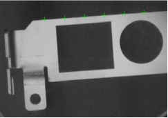
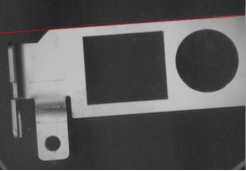

Thực hiện nội suy đường thẳng trên tập hợp các điểm đầu vào để thu được đường thẳng phù hợp nhất. Hiệu quả ứng dụng như minh họa ở Hình 1.
 
| Phân loại | Tên tham số | Mô tả tham số |
|---|---|---|
| Cửa sổ thuộc tính | Bật nội suy tối ưu toàn cục | Có bật chế độ nội suy tối ưu toàn cục hay không, mặc định là “Không”. Nếu chọn “Không”, sử dụng phương pháp ưu tiên hiệu suất; nếu chọn “Có”, sử dụng phương pháp tối ưu toàn cục. |
| Xét đến điểm ngoại lai | Có xét đến các điểm nằm xa đường (điểm ngoại lai) trong quá trình nội suy hay không. Chọn “Có” thì sẽ hiển thị các tham số phương pháp và số lượng điểm ngoại lai. | |
| Phương pháp điểm ngoại lai | Gồm 4 phương pháp: Combination (Tổ hợp đầy đủ), Ransac (Lấy mẫu ngẫu nhiên), Robust (Trọng số), và RansacRobust (Lấy mẫu ngẫu nhiên có trọng số). Robust cho kết quả ổn định và hiệu quả; Combination cho kết quả tối ưu nhất nhưng hiệu suất thấp; Ransac và RansacRobust có tính ngẫu nhiên. | |
| Số điểm ngoại lai | Số lượng điểm không tham gia vào quá trình nội suy đường thẳng. Phải nhỏ hơn tổng số điểm trừ đi 2. | |
| Cửa sổ hình ảnh | Hình ảnh đầu vào | Hiển thị hình ảnh cần kiểm tra. |
| Tập hợp điểm đầu vào | Hiển thị tập hợp các điểm đầu vào. | |
| Chuỗi dữ liệu | Hình ảnh đầu vào | Chiều rộng, chiều cao và kích thước điểm ảnh của ảnh đầu vào, giống với tham số ảnh đầu vào ở cửa sổ hình ảnh. |
| Tập hợp điểm đầu vào | Tập hợp điểm đầu vào dùng để nội suy, giống với tham số tập hợp điểm đầu vào ở cửa sổ hình ảnh. | |
| Giao diện nâng cao | Không có | Không có |
| Phân loại | Tên tham số | Mô tả tham số |
|---|---|---|
| Cửa sổ giám sát | Hình ảnh đầu vào | Chiều rộng, chiều cao và kích thước điểm ảnh của ảnh đầu ra. |
| Tập hợp điểm tham gia nội suy | Tập hợp tọa độ của tất cả các điểm tham gia vào quá trình nội suy. | |
| Kết quả đường thẳng | Toạ độ vị trí của đường thẳng nội suy, vector hướng và góc quay của đường thẳng. | |
| Lỗi căn bậc hai trung bình (RMSE) | Độ sai lệch của kết quả nội suy, giá trị càng nhỏ thì kết quả nội suy càng tốt. | |
| Kết quả thực thi | Kết quả thực hiện của công cụ. | |
| Thời gian thực thi | Thời gian thực hiện công cụ. | |
| Cửa sổ hình ảnh | Kết quả đường thẳng | Hiển thị kết quả nội suy đường thẳng, giống với tham số kết quả đường thẳng ở cửa sổ giám sát. |
| Kết quả thực thi | Hiển thị kết quả thực hiện công cụ, nếu thành công hiển thị “OK”, nếu thất bại hiển thị “NG”, giống với tham số kết quả thực thi ở cửa sổ giám sát. | |
| Chuỗi dữ liệu | Tập hợp điểm tham gia nội suy | Mảng điểm tham gia nội suy đường thẳng. |
| Kết quả đường thẳng | Kết quả nội suy đường thẳng, cung cấp cho các công cụ phía sau sử dụng, giống với tham số kết quả đường thẳng ở cửa sổ giám sát. |
Không có
Không có
参见“\Samples\形状间距及相关点.gvp”。